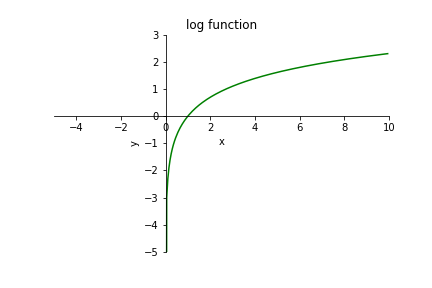

Matrici - Numpy 1
Scarica zip esercizi
Introduzione
Ci sono sostanzialmente due modi in Python di rappresentare matrici: come liste di liste, oppure con la libreria esterna numpy. Vediamo le principali differenze:
Liste di liste - vedere foglio separato
native in Python
non efficienti
le liste sono pervasive in Python, probabilmente incontrerai matrici espresse come liste di liste in ogni caso
forniscono un’idea di come costruire una struttura dati annidata
possono servire per comprendere concetti importanti come puntatori alla memoria e copie
Numpy - questo tutorial
non nativamente disponibile in Python
efficiente
alla base di parecchie librerie di calcolo scientifico (scipy, pandas)
sintassi più comoda per accedere agli elementi (lievemente diversa da quella delle liste di liste)
in alcuni rari casi potrebbe portare problemi di installazione e/o conflitti (l’implementazione non è puro Python)
Qui vedremo i tipi di dati e comandi essenziali della libreria numpy, mostrando molto spesso due versioni dello stesso codice: una prima versione inefficiente con i normali cicli for in Python (lenti), e una seconda senza cicli sfruttando le operazioni su vettori di numpy che spesso permettono di ottenere codice estrememente compatto ed efficiente.
Per ulteriori riferimenti, vedere:
ATTENZIONE: Numpy non funziona in Python Tutor
Che fare
scompatta lo zip in una cartella, dovresti ottenere qualcosa del genere:
matrices-numpy
matrices-numpy1.ipynb
matrices-numpy1-sol.ipynb
matrices-numpy2.ipynb
matrices-numpy2-sol.ipynb
matrices-numpy3-chal.ipynb
jupman.py
ATTENZIONE: Per essere visualizzato correttamente, il file del notebook DEVE essere nella cartella szippata.
apri il Jupyter Notebook da quella cartella. Due cose dovrebbero aprirsi, prima una console e poi un browser. Il browser dovrebbe mostrare una lista di file: naviga la lista e apri il notebook
matrices-numpy1.ipynbProsegui leggendo il file degli esercizi, ogni tanto al suo interno troverai delle scritte ESERCIZIO, che ti chiederanno di scrivere dei comandi Python nelle celle successive.
Scorciatoie da tastiera:
Per eseguire il codice Python dentro una cella di Jupyter, premi
Control+InvioPer eseguire il codice Python dentro una cella di Jupyter E selezionare la cella seguente, premi
Shift+InvioPer eseguire il codice Python dentro una cella di Jupyter E creare una nuova cella subito dopo, premi
Alt+InvioSe per caso il Notebook sembra inchiodato, prova a selezionare
Kernel -> Restart
np.array
Innanzitutto importiamo la libreria, e per comodità la rinominiamo in np:
[1]:
import numpy as np
Con le liste di liste abbiamo spesso costruito le matrici una riga alla volta, aggiundo liste all’occorrenza. In numpy invece di solito si crea in un colpo solo tutta la matrice, riempiendola di zeri.
In particolare, questo comando crea un ndarray riempito di zeri:
[2]:
mat = np.zeros( (2,3) ) # 2 righe, 3 colonne
[3]:
mat
[3]:
array([[0., 0., 0.],
[0., 0., 0.]])
Nota come all’interno di array( ) il contenuto sembra che venga rappresentato come una lista di liste, MA in realtà nelle memoria fisica i dati sono strutturati in una sequenza lineare che permette a Python di accedere ai numeri in modo molto più rapido.
Possiamo anche crearci un ndarray a partire da una lista di liste:
[4]:
mat = np.array( [ [5.0,8.0,1.0],
[4.0,3.0,2.0]])
[5]:
mat
[5]:
array([[5., 8., 1.],
[4., 3., 2.]])
[6]:
type(mat)
[6]:
numpy.ndarray
Creare una matrice riempita di uno
[7]:
np.ones((3,5)) # 3 righe, 5 colonne
[7]:
array([[1., 1., 1., 1., 1.],
[1., 1., 1., 1., 1.],
[1., 1., 1., 1., 1.]])
Creare una matrice riempita di un numero k
[8]:
np.full((3,5), 7)
[8]:
array([[7, 7, 7, 7, 7],
[7, 7, 7, 7, 7],
[7, 7, 7, 7, 7]])
Dimensioni di una matrice
Per ottenere le dimensioni, scriviamo così:
ATTENZIONE: dopo shape non ci sono le parentesi tonde !
shape è un attributo, non una funzione da chiamare
[9]:
mat = np.array( [ [5.0,8.0,1.0],
[4.0,3.0,2.0]])
mat.shape
[9]:
(2, 3)
Se vogliamo memorizzare le dimensioni in variabili separate, possiamo usare questo modo più pythonico (notare la virgola tra num_righe e num_colonne):
[10]:
num_righe, num_colonne = mat.shape
[11]:
num_righe
[11]:
2
[12]:
num_colonne
[12]:
3
Lettura e scrittura
Per accedere ai dati o sovrascriverli si utilizza la notazione con le quadre, con l’importante differenza che in Numpy è consentito scrivere entrambi gli indici dentro le stesse quadre, separati da una virgola:
ATTENZIONE: la notazione mat[i,j] è solo per numpy!
Con le liste di liste non funziona.
[13]:
mat = np.array( [ [5.0,8.0,1.0],
[4.0,3.0,2.0]])
# mettiamo il numero 9 nella cella alla riga 0 e colonna 1
mat[0,1] = 9
[14]:
mat
[14]:
array([[5., 9., 1.],
[4., 3., 2.]])
Accediamo alla cella alla riga 0 e colonna 1
[15]:
mat[0,1]
[15]:
9.0
Mettiamo il numero 7 nella cella alla riga 1 e colonna 2:
[16]:
mat[1,2] = 7
[17]:
mat
[17]:
array([[5., 9., 1.],
[4., 3., 7.]])
✪ ESERCIZIO: prova a scrivere così: che succede?
mat[0,0] = "c"
[18]:
# scrivi qui
✪ ESERCIZIO: Prova a scrivere così e vedere che succede:
mat[1,1.0]
[19]:
# scrivi qui
Riempire tutta la matrice
Possiamo MODIFICARE la matrice scrivendoci dentro un numero con fill()
[20]:
mat = np.array([[3.0, 5.0, 2.0],
[6.0, 2.0, 9.0]])
mat.fill(7) # NOTA: non ritorna nulla !!
[21]:
mat
[21]:
array([[7., 7., 7.],
[7., 7., 7.]])
Slice
Per estrarre dati da un ndarray possiamo usare le slice, con la notazione già usata per le liste normali. La differenza questa volta è che possiamo estrarre sotto-matrici indicando due range tra le stesse quadre:
[22]:
mat = np.array( [ [5, 8, 1],
[4, 3, 2],
[6, 7, 9],
[9, 3, 4],
[8, 2, 7]])
[23]:
mat[0:4, 1:3] # le righe dalla 0 *inclusa* alla 4 *esclusa*
# e le colonne dalla 1 *inclusa* alla 3 *esclusa*
[23]:
array([[8, 1],
[3, 2],
[7, 9],
[3, 4]])
[24]:
mat[0:1,0:3] # tutta la prima riga
[24]:
array([[5, 8, 1]])
[25]:
mat[0:1,:] # altro modo di estrarre tutta la prima riga
[25]:
array([[5, 8, 1]])
[26]:
mat[0:5, 0:1] # tutta la prima colonna
[26]:
array([[5],
[4],
[6],
[9],
[8]])
[27]:
mat[:, 0:1] # altro modo di estrarre tutta la prima colonna
[27]:
array([[5],
[4],
[6],
[9],
[8]])
Il passo: Possiamo anche specificare un passo come terzo parametro dopo il :, per esempio per estrarre solo le righe pari possiamo aggiungere un 2 così:
[28]:
mat[0:5:2, :]
[28]:
array([[5, 8, 1],
[6, 7, 9],
[8, 2, 7]])
ATTENZIONE: modificando le slice di numpy si modifica anche la matrice originale!
A differenza delle slice di liste che producono sempre nuove liste, per questioni di efficienza con le slice di numpy otteniamo solo una vista sui dati originari, che significa che scrivendo nella vista andiamo a scrivere anche nella matrice originale:
[29]:
mat = np.array( [ [5, 8, 1],
[4, 3, 2],
[6, 7, 9],
[9, 3, 4],
[8, 2, 7]])
[30]:
sotto_mat = mat[0:4, 1:3]
sotto_mat
[30]:
array([[8, 1],
[3, 2],
[7, 9],
[3, 4]])
[31]:
sotto_mat[0,0] = 999
[32]:
mat
[32]:
array([[ 5, 999, 1],
[ 4, 3, 2],
[ 6, 7, 9],
[ 9, 3, 4],
[ 8, 2, 7]])
Scrivere una costante in una slice
Possiamo scrivere una costante in tutte le celle di una regione identificando la regione con una slice, e ponendola uguale alla costante:
[33]:
mat = np.array( [ [5, 8, 1],
[4, 3, 2],
[6, 7, 9],
[9, 3, 4],
[8, 2, 5]])
mat[0:4, 1:3] = 7
mat
[33]:
array([[5, 7, 7],
[4, 7, 7],
[6, 7, 7],
[9, 7, 7],
[8, 2, 5]])
Scrivere una matrice in una slice
Possiamo scrivere dentro tutte le celle di una regione identificando la regione con una slice, e ponendola uguale ad una matrice da cui vogliamo leggere le celle.
ATTENZIONE: Per evitare problemi, controlla di usare le stesse dimensioni nella slice e nella matrice a destra!
[34]:
mat = np.array( [ [5, 8, 1],
[4, 3, 2],
[6, 7, 9],
[9, 3, 4],
[8, 2, 5]])
mat[0:4, 1:3] = np.array([
[10,50],
[11,51],
[12,52],
[13,53],
])
mat
[34]:
array([[ 5, 10, 50],
[ 4, 11, 51],
[ 6, 12, 52],
[ 9, 13, 53],
[ 8, 2, 5]])
Assegnazione e copia
Con Numpy dobbiamo fare attenzione a quando usiamo l’operatore di assegnazione =: come accade con le liste normali, se facciamo una assegnazione nella nuova variabile otterremo solo un puntatore all’array originale:
[35]:
va = np.array([1,2,3])
[36]:
va
[36]:
array([1, 2, 3])
[37]:
vb = va
[38]:
vb[0] = 100
[39]:
vb
[39]:
array([100, 2, 3])
[40]:
va
[40]:
array([100, 2, 3])
Se volessimo una copia completa dell’array, dovremmo usare il metodo .copy():
[41]:
va = np.array([1,2,3])
[42]:
vc = va.copy()
[43]:
vc
[43]:
array([1, 2, 3])
[44]:
vc[0] = 100
[45]:
vc
[45]:
array([100, 2, 3])
[46]:
va
[46]:
array([1, 2, 3])
Calcoli
Numpy è estremamente flessibile, e ci permette di usare gli array quasi con le stesse operazioni dei vettori e matrici che conosciamo dall’algebra:
[47]:
va = np.array([5,9,7])
va
[47]:
array([5, 9, 7])
[48]:
vb = np.array([6,8,0])
vb
[48]:
array([6, 8, 0])
Quando effettuiamo un’operazione algebrica, tipicamente viene creato un NUOVO array:
[49]:
vc = va + vb
vc
[49]:
array([11, 17, 7])
Notiamo che la somma non ha cambiato gli input:
[50]:
va
[50]:
array([5, 9, 7])
[51]:
vb
[51]:
array([6, 8, 0])
Moltiplicazione per uno scalare
[52]:
m = np.array([[5, 9, 7],
[6, 8, 0]])
[53]:
3 * m
[53]:
array([[15, 27, 21],
[18, 24, 0]])
Somma di uno scalare
[54]:
3 + m
[54]:
array([[ 8, 12, 10],
[ 9, 11, 3]])
Moltiplicazione
Attenzione alla moltiplicazione con *, che diversamente dalla moltiplicazione classica tra matrici moltiplica elemento per elemento e richiede quindi matrici di dimensioni identiche:
[55]:
ma = np.array([[1, 2, 3],
[10, 20, 30]])
mb = np.array([[1, 0, 1],
[4, 5, 6]])
ma * mb
[55]:
array([[ 1, 0, 3],
[ 40, 100, 180]])
Se vogliamo la moltiplicazione tra matrici che troviamo nell’algebra classica, dobbiamo usare l’operatore @ facendo attenzione ad avere matrici di dimensioni compatibili:
[56]:
mc = np.array([[1, 2, 3],
[10, 20, 30]])
md = np.array([[1, 4],
[0, 5],
[1, 6]])
mc @ md
[56]:
array([[ 4, 32],
[ 40, 320]])
Divisione per uno scalare
[57]:
ma = np.array([[1, 2, 0.0],
[10, 0.0, 30]])
ma / 4
[57]:
array([[0.25, 0.5 , 0. ],
[2.5 , 0. , 7.5 ]])
Attenzione che se dividiamo per 0.0, l’esecuzione del programma continuerà comunque con un warning e ci ritroveremo nella matrice degli strani nan e inf che tendono poi a creare problemi - vedere al riguardo sezione Nan e inifinità
[58]:
print(ma / 0.0)
print("DOPO")
[[inf inf nan]
[inf nan inf]]
DOPO
/home/da/.local/lib/python3.7/site-packages/ipykernel_launcher.py:1: RuntimeWarning: divide by zero encountered in true_divide
"""Entry point for launching an IPython kernel.
/home/da/.local/lib/python3.7/site-packages/ipykernel_launcher.py:1: RuntimeWarning: invalid value encountered in true_divide
"""Entry point for launching an IPython kernel.
Aggregazione
Numpy fornisce diverse funzioni per calcolare statistiche, noi ne mostriamo solo alcune:
[59]:
m = np.array([[5, 4, 6],
[3, 7, 1]])
np.sum(m)
[59]:
26
[60]:
np.max(m)
[60]:
7
[61]:
np.min(m)
[61]:
1
Aggregazione su riga o colonna
Aggiungendo il parametro axis possiamo indicare di effettuare l’aggregazione su ciascuna colonna (axis=0) o riga (axis=1):
[62]:
np.max(m, axis=0) # il massimo di ogni colonna
[62]:
array([5, 7, 6])
[63]:
np.sum(m, axis=0) # somma ogni colonna
[63]:
array([ 8, 11, 7])
[64]:
np.max(m, axis=1) # il massimo di ogni riga
[64]:
array([6, 7])
[65]:
np.sum(m, axis=1) # somma ogni riga
[65]:
array([15, 11])
Filtrare
Numpy mette a disposizione un mini-linguaggio per filtrare i numeri in un array specificando dei criteri di selezione. Vediamo un esempio:
[66]:
mat = np.array([[5, 2, 6],
[1, 4, 3]])
mat
[66]:
array([[5, 2, 6],
[1, 4, 3]])
Supponiamo di voler ottenere un array con tutti i numeri da mat che sono maggiori di 2.
Possiamo indicare la matrice mat su cui volevamo operare, poi tra parentesi quadre indichiamo una specie di condizione booleana, riusando la variabile mat così:
[67]:
mat[ mat > 2 ]
[67]:
array([5, 6, 4, 3])
Ma esattamente, che cos’è quella strana espressione che abbiamo messo dentro le quadre? Proviamo ad eseguirla da sola:
[68]:
mat > 2
[68]:
array([[ True, False, True],
[False, True, True]])
Notiamo che ci restituisce una matrice di booleani, che sono veri quando la corrispondente cella nella matrice originale soddisfa la condizione che abbiamo imposto.
Mettendo poi questa espressione all’interno di mat[ ] otteniamo i valori della matrice originaria che soddisfano l’espressione:
[69]:
mat[ mat > 2 ]
[69]:
array([5, 6, 4, 3])
Non solo, possiamo costruire espressione più complesse usando & per la congiunzione logica and e | (carattere pipe) per la congiunzione logica or:
[70]:
mat = np.array([[5, 2, 6],
[1, 4, 3]])
mat[(mat > 3) & (mat < 6)]
[70]:
array([5, 4])
[71]:
mat = np.array([[5, 2, 6],
[1, 4, 3]])
mat[(mat < 2) | (mat > 4)]
[71]:
array([5, 6, 1])
ATTENZIONE: RICORDATI LE PARENTESI TONDE TRA LE VARIE ESPRESSIONI!
ESERCIZIO: prova a riscrivere le espressioni qua sopra ‘dimenticando’ le parentesi tonde nelle varie componenti (sinistra/destra/entrambe) e guarda cosa succede. Ottieni errori o risultati diversi da quelli attesi?
Mostra soluzione[72]:
mat = np.array([[5, 2, 6],
[1, 4, 3]])
# scrivi qui
ATTENZIONE: and E or NON FUNZIONANO!
ESERCIZIO: prova a riscrivere le espressioni qua sopra sostituendo & con and e | con or e guarda cosa succede. Ottieni errori o risultati diversi da quelli attesi?
[73]:
mat = np.array([[5, 2, 6],
[1, 4, 3]])
# scrivi qui
Trovare indici con np.where
Abbiamo visto come trovare il contenuto delle celle per cui una condizione è soddisfatta. E se volessimo trovare gli indici di quelle celle? In quel caso useremmo la funzione np.where, passandogli come parametro la condizione espressa nello stesso linguaggio che abbiamo già usato prima.
Per esempio, se volessimo trovare gli indici delle celle che contengono numeri minori di 40 o maggiori di 60 scriveremmo così:
[74]:
#0 1 2 3 4 5
v = np.array([30,60,20,70,40,80])
np.where((v < 40) | (v > 60))
[74]:
(array([0, 2, 3, 5]),)
Scrivere in celle che soddisfano una condizione
Possiamo usare np.where per sostituire i valori nelle celle che soddisfano una condizione con altri valori che saranno indicati in due matrici extra ma e mb. Nel caso la condizione sia soddisfatta, verrà preso un corrispondente valore da ma, altrimenti da mb.
[75]:
ma = np.array([
[ 1, 2, 3, 4],
[ 5, 6, 7, 8],
[ 9,10,11,12]
])
mb = np.array([
[ -1, -2, -3, -4],
[ -5, -6, -7, -8],
[ -9,-10,-11,-12]
])
mat = np.array([
[40,70,10,80],
[20,30,60,40],
[10,60,80,90]
])
np.where(mat < 50, ma, mb)
[75]:
array([[ 1, -2, 3, -4],
[ 5, 6, -7, 8],
[ 9, -10, -11, -12]])
Sequenze arange e linspace
La funzione standard range Python non permette incrementi con la virgola, che possiamo invece ottenere costruendo sequenze di numeri float con np.arange, specificando limite sinistro (incluso), destro (escluso) e l’incremento:
[76]:
np.arange(0.0, 1.0, 0.2)
[76]:
array([0. , 0.2, 0.4, 0.6, 0.8])
Alternativamente, possiamo usare np.linspace, che prende un limite sinistro incluso, un limite destro questa volta incluso, e il numero di ripartizioni in cui suddividere questo spazio:
[77]:
np.linspace(0, 0.8, 5)
[77]:
array([0. , 0.2, 0.4, 0.6, 0.8])
[78]:
np.linspace(0, 0.8, 10)
[78]:
array([0. , 0.08888889, 0.17777778, 0.26666667, 0.35555556,
0.44444444, 0.53333333, 0.62222222, 0.71111111, 0.8 ])
NaN e infinità
I numeri float possono essere numeri, non numeri , e anche infinità . A volte durante i calcoli accadono condizioni estreme, come per esempio dividere un numero enorme per un numero enorme. In tali casi, potresti finire con un float particolare che è il temuto Not a Number , NaN in breve, o potresti ottenere una infinità . Questo potrebbe portare a comportamenti imprevedibili, perciò devi saper riconoscere situazioni potenzialmente problematiche. Esempi:
[79]:
10e99999999999999999999999
[79]:
inf
[80]:
10e99999999999999999999999 / 10e99999999999999999999999
[80]:
nan
I comportamenti descritti in seguito sono dettati dallo standard IEEE per l’Aritmetica in virgola mobile binaria (IEEE 754) usato da Numpy e che è implementato in tutti i processori ( CPU ), perciò di fatto riguarda tutti i linguaggi di programmazione.
NaN
NaN significa Non è un Numero. Che è già un nome poco chiaro, visto che il NaN in realtà è un membro molto speciale dei floats, con questa stupefacente proprietà:
NaN NON E’ UGUALE A SE’ STESSO !!!
Hai letto bene, NaN davvero non è uguale a sè stesso.
Sappiamo che la tua mente vuole rifiutare questa nozione, ma la confermeremo a breve.
Per ottenere un NaN, puoi usare il modulo Python math che contiene questo oggetto alieno:
[81]:
import math
math.nan # nota che stampa 'nan' con n minuscolo
[81]:
nan
Come detto, un NaN è considerato un float:
[82]:
type(math.nan)
[82]:
float
Eppure, si comporta molto diversamente dai suoi compagni float, o da ogni altro oggetto nell’universo conosciuto:
[83]:
math.nan == math.nan # Eh ????
[83]:
False
Rilevare i NaN
Detto quanto sopra, se vuoi controllare quando una variabile x è un NaN, non puoi scrivere così:
[84]:
x = math.nan
if x == math.nan: # SBAGLIATO
print("Sono un NaN ")
else:
print("x è qualcos'altro ??")
x è qualcos'altro ??
Per gestire correttamente questa situazione, devi usare la funzione math.isnan:
[85]:
x = math.nan
if math.isnan(x): # CORRETTO
print("x è un NaN ")
else:
print("x è qualcos'altro ??")
x è un NaN
Nota che math.isnan funziona anche con NaN negativi:
[86]:
y = -math.nan
if math.isnan(y): # CORRETTO
print("y è un NaN ")
else:
print("y è quacos'altro ??")
y è un NaN
Sequenze con i NaN
Per fortuna, non tutto è completamente assurdo. Se compari sequenze che contengono NaN ad altre, ottieni risultati ragionevoli:
[87]:
[math.nan, math.nan] == [math.nan, math.nan]
[87]:
True
[88]:
[math.nan, math.nan] == [math.nan, 5.0]
[88]:
False
Esercizio - NaN due variabili
Date due variabili x e y, scrivi del codice che stampa "stessa cosa" quando sono lo stesso, anche quando sono NaN. Altrimenti, stampa "non sono la stessa cosa"
[89]:
import math
# output atteso: stessa cosa
x = math.nan
y = math.nan
# output atteso: non sono la stessa cosa
#x = 3
#y = math.nan
# output atteso: non sono la stessa cosa
#x = math.nan
#y = 5
# output atteso: non sono la stessa cosa
#x = 2
#y = 7
# output atteso: stessa cosa
#x = 4
#y = 4
# scrivi qui
stessa cosa
Operazioni sui NaN
Qualunque operazione sui NaN genera un altro NaN:
[90]:
5 * math.nan
[90]:
nan
[91]:
math.nan + math.nan
[91]:
nan
[92]:
math.nan / math.nan
[92]:
nan
L’unica cosa che non puoi fare è dividere per zero un NaN ‘fuori scatola’:
math.nan / 0
---------------------------------------------------------------------------
ZeroDivisionError Traceback (most recent call last)
<ipython-input-94-1da38377fac4> in <module>
----> 1 math.nan / 0
ZeroDivisionError: float division by zero
NaN corrisponde al valore logico booleano True:
[93]:
if math.nan:
print("That's True")
That's True
I NaN e Numpy
Quando usi Numpy è abbastanza probabile incontrare NaN, al punto che sono ridefiniti dentro Numpy - ma di fatto sono esattamente gli stessi che nel modulo math:
[94]:
np.nan
[94]:
nan
[95]:
math.isnan(np.nan)
[95]:
True
[96]:
np.isnan(math.nan)
[96]:
True
In Numpy quando hai numeri sconosciuti potresti essere tentato di mettere un None. Puoi anche farlo, ma guarda attentamente il risultato:
[97]:
import numpy as np
np.array([4.9,None,3.2,5.1])
[97]:
array([4.9, None, 3.2, 5.1], dtype=object)
L’array risultante non è un array di float64 che permette calcoli veloci, invece è un array che contiene generici object , perchè Numpy assume che l’array contenga dati eterogenei. Perciò quello che guadagni in generalità lo perdi in performance, che dovrebbe essere il motivo principale di usare Numpy.
Per quanto appaiano strani, i NaN sono considerati come dei float e quindi possono essere salvati nell’array:
[98]:
np.array([4.9,np.nan,3.2,5.1]) # NOTA: il `dtype=object` è sparito
[98]:
array([4.9, nan, 3.2, 5.1])
Dove sono i NaN ?
Vediamo dove possiamo incontrare dei NaN e altri oggetti strani come le infinità.
Prima, controlliamo cosa succede quando chiamiamo la funzione log del modulo standard math. Dalle lezioni di matematica, sappiamo che la funzione log si comporta così:
\(x < 0\): non definita
\(x = 0\): tende a meno infinito
\(x > 0\): definita

Perciò possiamo chiederci cosa succede se gli passiamo un valore per il quale non è definita. Proviamo prima con math.log della libreria standard di Python:
>>> math.log(-1)
ValueError Traceback (most recent call last)
<ipython-input-38-d6e02ba32da6> in <module>
----> 1 math.log(-1)
ValueError: math domain error
In questo caso viene sollevato ValueError e l’esecuzione viene interrotta.
Vediamo ora l’equivalente in Numpy:
[99]:
np.log(-1)
/home/da/.local/lib/python3.7/site-packages/ipykernel_launcher.py:1: RuntimeWarning: invalid value encountered in log
"""Entry point for launching an IPython kernel.
[99]:
nan
In questo caso abbiamo ottenuto come risultato np.nan, quindi l’esecuzione non si è interrotta, Jupyter ci ha solo informato con una stampa addizionale che abbiamo compiuto qualcosa di pericoloso.
Quando incontra calcoli pericolosi, Numpy di default effettua in ogni caso il calcolo e salva il risultato come NaN o altri oggetti limite. Questo vale anche per i calcoli sugli array:
[100]:
np.log(np.array([3,7,-1,9]))
/home/da/.local/lib/python3.7/site-packages/ipykernel_launcher.py:1: RuntimeWarning: invalid value encountered in log
"""Entry point for launching an IPython kernel.
[100]:
array([1.09861229, 1.94591015, nan, 2.19722458])
Infinità
Come abbiamo detto in precedenza, Numpy usa lo standard IEEE per l’aritmetica binaria in virgola mobile (IEEE 754). Dato che qualcuno all’IEEE ha deciso di racchiudere i misteri dell’infinito nei numeri float, abbiamo ancora un’altro cittadino da considerare quando facciamo calcoli (per altre informazioni, vedere Numpy documentation on constants):
Infinità positiva np.inf
[101]:
np.array( [ 5 ] ) / 0
/home/da/.local/lib/python3.7/site-packages/ipykernel_launcher.py:1: RuntimeWarning: divide by zero encountered in true_divide
"""Entry point for launching an IPython kernel.
[101]:
array([inf])
[102]:
np.array( [ 6,9,5,7 ] ) / np.array( [ 2,0,0,4 ] )
/home/da/.local/lib/python3.7/site-packages/ipykernel_launcher.py:1: RuntimeWarning: divide by zero encountered in true_divide
"""Entry point for launching an IPython kernel.
[102]:
array([3. , inf, inf, 1.75])
Attenzione che:
Not a Number non è equivalente all’infinità
l’infinità positiva non è equivalente all’infinità negativa
l’infinità è equivalente all’infinità positiva
Per fortuna, l’infinità è equivalente all’infinità:
[103]:
np.inf == np.inf
[103]:
True
perciò possiamo in sicurezza equiparare due infinità con ==:
[104]:
x = np.inf
if x == np.inf:
print("x è infinito")
else:
print("x è finito")
x è infinito
Alternativamente, possiamo usare la funzione np.isinf:
[105]:
np.isinf(np.inf)
[105]:
True
Infinità negativa
Possiamo anche avere un’infinità negativa, che è differente dall’inifinità positiva:
[106]:
-np.inf == np.inf
[106]:
False
Nota che isinf può rilevare sia infinità positive che negative:
[107]:
np.isinf(-np.inf)
[107]:
True
Per rilevare specificamente un’infinità negativa dei usare isneginf:
[108]:
np.isneginf(-np.inf)
[108]:
True
[109]:
np.isneginf(np.inf)
[109]:
False
Dove possiamo trovarle? Come esempio, proviamo la funzione np.log:
[110]:
np.log(0)
/home/da/.local/lib/python3.7/site-packages/ipykernel_launcher.py:1: RuntimeWarning: divide by zero encountered in log
"""Entry point for launching an IPython kernel.
[110]:
-inf
Combinare infinità e NaN
Quando esegui operazioni che riguardano le infinità e i NaN, l’aritmetica IEEE prova a imitare l’analisi classica, a volte includendo NaN come risultato:
[111]:
np.inf + np.inf
[111]:
inf
[112]:
- np.inf - np.inf
[112]:
-inf
[113]:
np.inf * -np.inf
[113]:
-inf
Un risultato che in analisi classica sarebbe non definito, qui diventa NaN:
[114]:
np.inf - np.inf
[114]:
nan
[115]:
np.inf / np.inf
[115]:
nan
Come al solito, combinare con un NaN risulta in NaN:
[116]:
np.inf + np.nan
[116]:
nan
[117]:
np.inf / np.nan
[117]:
nan
Zero negativo
Puoi persino avere uno zero negativo - chi l’avrebbe pensato?
[118]:
np.NZERO
[118]:
-0.0
Lo zero negativo naturalmente fa coppia con il più conosciuto e apprezzato zero positivo:
[119]:
np.PZERO
[119]:
0.0
NOTA: Scrivere np.NZERO o -0.0 è esattamente la stessa cosa. Lo stesso vale per lo zero positivo.
A questo punto, potresti cominciare a chiederti con qualche se sono davvero considerati uguali. Verifichiamo:
[120]:
0.0 == -0.0
[120]:
True
Grandioso! Finalmente qualcosa che ha senso.
Dato quanto sopra, potresti pensare che in una formula puoi sostituire uno per l’altro e ottenere gli stessi risultati, in armonia con le regole dell’universo.
Facciamo un tentativo di sostituzione, come esempio prima cercheremo di dividere un numero per uno zero positivo (persino se gli insegnanti di matematica ci dicono che tali divisioni siano vietate). Cosa potremmo mai ottenere?
\(\large \frac{5.0}{0.0}= ???\)
In termini di Numpy, potremmo scrivere così per ‘inscatolare’ tutto in arrays:
[121]:
np.array( [ 5.0 ] ) / np.array( [ 0.0 ] )
/home/da/.local/lib/python3.7/site-packages/ipykernel_launcher.py:1: RuntimeWarning: divide by zero encountered in true_divide
"""Entry point for launching an IPython kernel.
[121]:
array([inf])
Mmm, abbiamo ottenuto un array con dentro np.inf (e un warning stampato)
Se 0.0 e -0.0 sono davvero la stessa cosa, dividendo un numero per -0.0 dovremmo ottenere lo stesso identico risultato, no?
Proviamo:
[122]:
np.array( [ 5.0 ] ) / np.array( [ -0.0 ] )
/home/da/.local/lib/python3.7/site-packages/ipykernel_launcher.py:1: RuntimeWarning: divide by zero encountered in true_divide
"""Entry point for launching an IPython kernel.
[122]:
array([-inf])
Ecchecaspita. Questa volta ci ritroviamo con una infinità negativa -np.inf
Se tutto ciò ti pare strano, non dare la colpa a Numpy o Python. Questo è il modo con cui praticamente ogni processore ( CPU ) compie operazioni in virgola mobile, perciò lo troverai in quasi TUTTI i linguaggi di programmazione.
Quello che i linguaggi di programmazione possono fare è aggiungere ulteriori controlli per proteggerti da queste situazioni paradossali, come per esempio lanciare ZeroDivisionError quando scrivi direttamente 1.0/0.0 (bloccando quindi l’esecuzione) o stampare un warning nel caso di operazioni su array Numpy.
Esercizio: rilevare numeri propri
Scrivi del codice che STAMPA numeri uguali se due numeri x e y sono uguali e veri numeri, e STAMPA non uguali altrimenti.
NOTA: numeri non uguali va stampato se uno qualunque dei numeri è infinito o NaN.
Per risolverlo, sentiti libero di chiamare funzioni indicate nella documentazione di Numpy riguardo le costanti
Mostra soluzione[123]:
import numpy as np
# atteso: numeri uguali
x = 5
y = 5
# atteso: numeri non uguali
#x = np.inf
#y = 3
# atteso: numeri non uguali
#x = 3
#y = np.inf
# atteso: numeri non uguali
#x = np.inf
#y = np.nan
# atteso: numeri non uguali
#x = np.nan
#y = np.inf
# atteso: numeri non uguali
#x = np.nan
#y = 7
# atteso: numeri non uguali
#x = 9
#y = np.nan
# atteso: numeri non uguali
#x = np.nan
#y = np.nan
# scrivi qui
numeri uguali
numeri uguali
Domande - NaN
Per ciascuna delle espressioni seguenti, prova ad indovinare il risultato
ATTENZIONE: ciò che segue può causare nausea e gravi convulsioni
Durante test clinici, sia pazienti con inclinazioni matematiche che soggetti con repulsione per le scienze esatte hanno lamentato malessere per ragioni differenti che sono ancora oggetto di ricerca.
a. 0.0 * -0.0
b. (-0.0)**3
c. np.log(-7) == math.log(-7)
d. np.log(-7) == np.log(-7)
e. np.isnan( 1 / np.log(1) )
f. np.sqrt(-1) * np.sqrt(-1) # sqrt = radice quadrata
g. 3 ** np.inf
h 3 ** -np.inf
i. 1/np.sqrt(-3)
j. 1/np.sqrt(-0.0)
m. np.sqrt(np.inf) - np.sqrt(-np.inf)
n. np.sqrt(np.inf) + ( 1 / np.sqrt(-0.0) )
o. np.isneginf(np.log(np.e) / np.sqrt(-0.0))
p. np.isinf(np.log(np.e) / np.sqrt(-0.0))
q. [np.nan, np.inf] == [np.nan, np.inf]
r. [np.nan, -np.inf] == [np.nan, np.inf]
s. [np.nan, np.inf] == [-np.nan, np.inf]
Prosegui
Continua ora con gli esercizi.